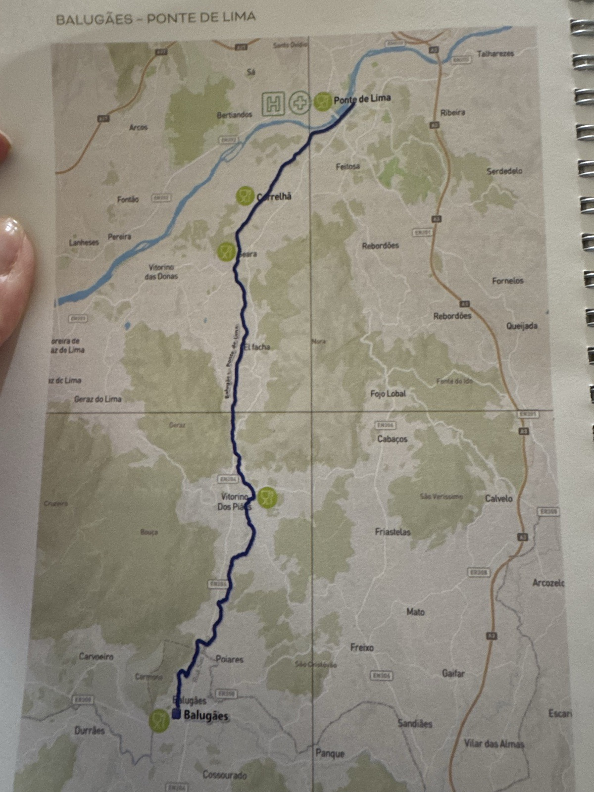
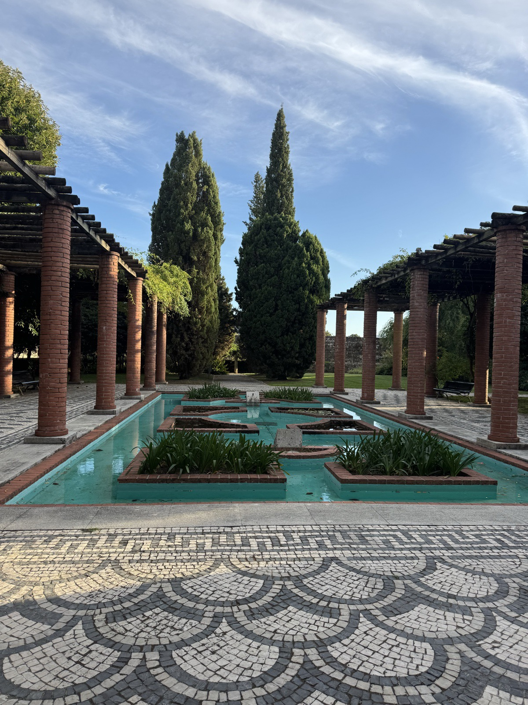
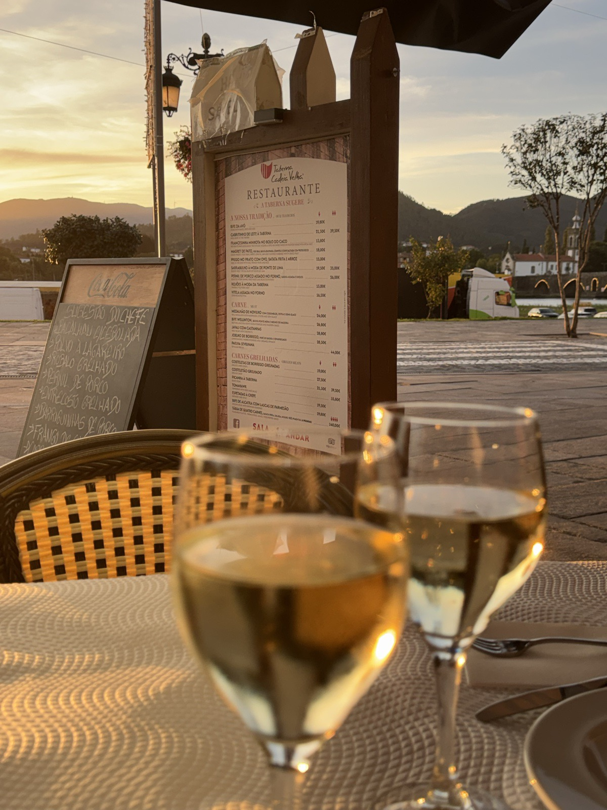
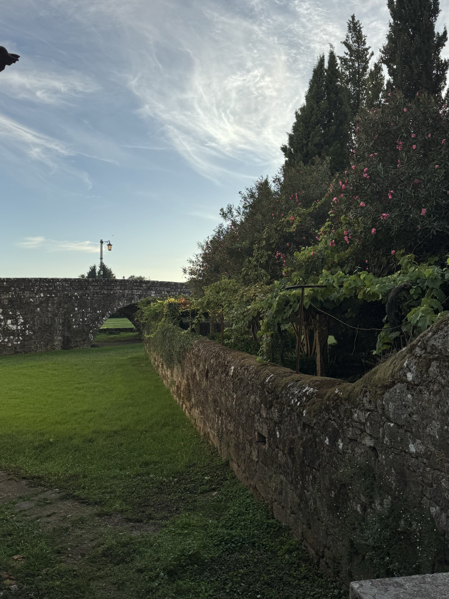

Stage 4: Balugaes to Ponte de Lima
Data: 12.2 miles, 4 hours 41 minutes moving time, 1640 feet elevation.



Another blue sky day in Portugal! Today’s hike took us through miles of vineyards, dairy farms, and vegetable/fruit farms. Grapes adorn nearly every homestead and fruit trees—fig, pear, orange, grapefruit, and apple are scattered over the landscape. Gardenias, white and red roses, and a variety of wild flowers line stone walls. It feels like the Way has been specifically planted for pilgrim enjoyment. Fruit baskets lay on rustic tables with embroidered linens inviting pilgrims to help themselves. The yellow arrows followed by pilgrims for centuries appear on stone walls, granite monuments, and on sidewalks and roads. It’s kind of hard to lose your Way.

Descending into the valley after a steep climb, there are miles of dark purple, violet, and white grapes stretched out over lines and pergolas. Three women dressed in long sleeves and skirts carefully remove long bunches of grapes and lay them in wagons. Soon I hear them summoning us to the vines as they’ve cut bunches of grapes for us to taste. Enthusiastically I climbed into the grape vine trench to gratefully accept the offering! And I returned her gift with a Camino shell I carried from the Cape. She was surprised to receive the shell and held it to her chest with a big smile. What a gift—the smile, her generosity, and the opportunity to taste these nectar jewels of the gods! Delicious!!! My hypothesis is that these grapes are for port wine. The white grapes are for vino verde. Kindness and friendliness reign on the Way.

We strolled into Ponte de Lima around 2:40 with time for vino verde and Super Bock (local beer). Dinner on the Donas River overlooking a medieval bridge, a walk and some playtime in the Jardin de Ponte de Lima, and laundry in the sink. Simple life on the Way.

